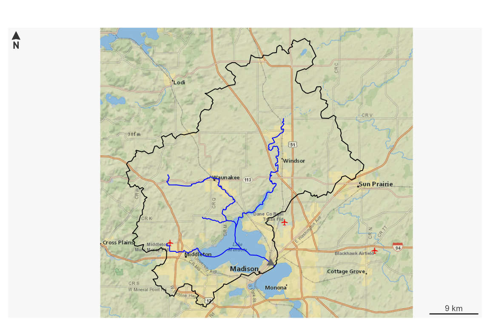
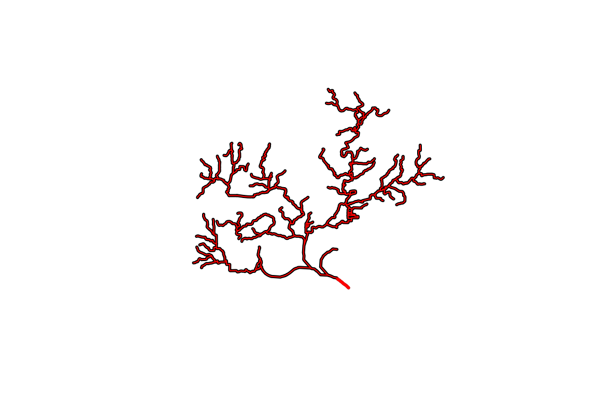
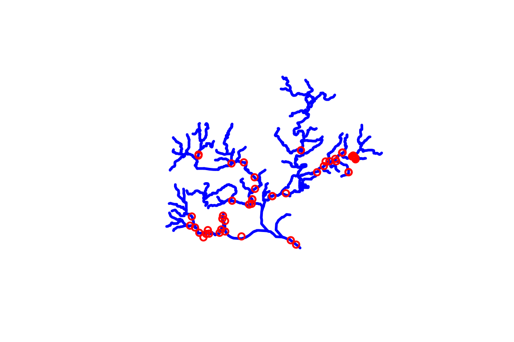

TL;DR
Pick an outlet location and download some data.
# Uncomment to install!
# install.packages("nhdplusTools")
library(nhdplusTools)
library(sf)
start_point <- st_sfc(st_point(c(-89.362239, 43.090266)), crs = 4269)
start_comid <- discover_nhdplus_id(start_point)
flowline <- navigate_nldi(list(featureSource = "comid",
featureID = start_comid),
mode = "upstreamTributaries",
distance_km = 1000)
subset_file <- tempfile(fileext = ".gpkg")
subset <- subset_nhdplus(comids = as.integer(flowline$UT$nhdplus_comid),
output_file = subset_file,
nhdplus_data = "download",
flowline_only = FALSE,
return_data = TRUE, overwrite = TRUE)
#> All intersections performed in latitude/longitude.
#> Reading NHDFlowline_Network
#> Spherical geometry (s2) switched off
#> Spherical geometry (s2) switched on
#> Writing NHDFlowline_Network
#> Reading CatchmentSP
#> Spherical geometry (s2) switched off
#> Spherical geometry (s2) switched on
#> Writing CatchmentSP
flowline <- subset$NHDFlowline_Network
catchment <- subset$CatchmentSP
waterbody <- subset$NHDWaterbody
## Or using a file:
flowline <- sf::read_sf(subset_file, "NHDFlowline_Network")
catchment <- sf::read_sf(subset_file, "CatchmentSP")
waterbody <- sf::read_sf(subset_file, "NHDWaterbody")
plot(sf::st_geometry(flowline), col = "blue")
plot(start_point, cex = 1.5, lwd = 2, col = "red", add = TRUE)
plot(sf::st_geometry(catchment), add = TRUE)
plot(sf::st_geometry(waterbody), col = rgb(0, 0, 1, alpha = 0.5), add = TRUE)
Or fetch NWIS an site as the starting point and generate a plot. Data is returned and/or stored in a local file for later use.
# ?plot_nhdplus for more
plot_data <- plot_nhdplus(
outlets = list(featureSource = "nwissite", featureID = "USGS-05428500"),
gpkg = subset_file, overwrite = TRUE)
#> Zoom set to: 11
#> Warning in par(old_par): graphical parameter "cin" cannot be set
#> Warning in par(old_par): graphical parameter "cra" cannot be set
#> Warning in par(old_par): graphical parameter "csi" cannot be set
#> Warning in par(old_par): graphical parameter "cxy" cannot be set
#> Warning in par(old_par): graphical parameter "din" cannot be set
#> Warning in par(old_par): graphical parameter "page" cannot be set
This vignette covers a range of utilities the nhdplusTools package offers for working with data in a U.S. context.
The first thing you are going to need to do is go get some data to
work with. nhdplusTools provides the ability to download
small subsets of the NHDPlus directly from web services. For large
subsets, greater than a few thousand square kilometers, you can use
download_nhdplusv2().
If you are working with the whole National Seamless database,
nhdplusTools has some convenience functions you should be
aware of. Once you have it downloaded and extracted, you can tell the
nhdplusTools package where it is with the nhdplus_path()
function.
nhdplus_path(file.path(work_dir, "natseamless.gpkg"))
basename(nhdplus_path())
#> [1] "natseamless.gpkg"If you don’t need or want all the geometry for the flowlines,
consider using get_vaa(). It allows you to retrieve
specific NHDPlus attributes with very little overhead. It also supports
access to an updated set of network attributes that incorporate numerous
network updates from national hydrologic modeling projects.
vaa <- get_vaa()
names(vaa)
#> [1] "comid" "streamleve" "streamorde" "streamcalc" "fromnode"
#> [6] "tonode" "hydroseq" "levelpathi" "pathlength" "terminalpa"
#> [11] "arbolatesu" "divergence" "startflag" "terminalfl" "dnlevel"
#> [16] "thinnercod" "uplevelpat" "uphydroseq" "dnlevelpat" "dnminorhyd"
#> [21] "dndraincou" "dnhydroseq" "frommeas" "tomeas" "reachcode"
#> [26] "lengthkm" "fcode" "vpuin" "vpuout" "areasqkm"
#> [31] "totdasqkm" "divdasqkm" "totma" "wbareatype" "pathtimema"
#> [36] "slope" "slopelenkm" "ftype" "gnis_name" "gnis_id"
#> [41] "wbareacomi" "hwnodesqkm" "rpuid" "vpuid" "roughness"
nrow(vaa)
#> [1] 2691339NHDPlus HiRes
NHDPlus HiRes is an in-development dataset that introduces much more
dense flowlines and catchments. In the long run,
nhdplusTools will have complete support for NHDPlus HiRes.
So far, nhdplusTools will help download and interface
NHDPlus HiRes data with existing nhdplusTools
functionality. It’s important to note that nhdplusTools was
primarily implemented using NHDPlusV2 and any use of HiRes should be
subject to scrutiny.
For the demo below, a small sample of HiRes data that has been loaded
into nhdplusTools is used. The first line shows how you can
download additional data (just change download_files to
TRUE).
download_nhdplushr(nhd_dir = "download_dir",
hu_list = c("0101"), # can mix hu02 and hu04 codes.
download_files = FALSE) # TRUE will download files.
#> [1] "https://prd-tnm.s3.amazonaws.com/StagedProducts/Hydrography/NHDPlusHR/VPU/Current/GDB/NHDPLUS_H_0101_HU4_20220901_GDB.zip"
out_gpkg <- file.path(work_dir, "nhd_hr.gpkg")
hr_data <- get_nhdplushr(work_dir,
out_gpkg = out_gpkg)
(layers <- st_layers(out_gpkg))
#> Driver: GPKG
#> Available layers:
#> layer_name geometry_type features fields crs_name
#> 1 NHDFlowline Line String 2691 57 GRS 1980(IUGG, 1980)
#> 2 NHDPlusCatchment Multi Polygon 2603 7 GRS 1980(IUGG, 1980)
#> 3 NHDWaterbody Polygon 1044 15 GRS 1980(IUGG, 1980)
#> 4 NHDArea Polygon 10 14 GRS 1980(IUGG, 1980)
#> 5 NHDLine Line String 142 12 GRS 1980(IUGG, 1980)
#> 6 NHDPlusSink Point 1 10 GRS 1980(IUGG, 1980)
#> 7 NHDPoint 3D Point 7 10 GRS 1980(IUGG, 1980)
names(hr_data)
#> [1] "NHDFlowline" "NHDPlusCatchment"
unlink(out_gpkg)
hr_data <- get_nhdplushr(work_dir,
out_gpkg = out_gpkg,
layers = NULL)
(layers <- st_layers(out_gpkg))
#> Driver: GPKG
#> Available layers:
#> layer_name geometry_type features fields crs_name
#> 1 NHDFlowline Line String 2691 57 GRS 1980(IUGG, 1980)
#> 2 NHDPlusCatchment Multi Polygon 2603 7 GRS 1980(IUGG, 1980)
#> 3 NHDWaterbody Polygon 1044 15 GRS 1980(IUGG, 1980)
#> 4 NHDArea Polygon 10 14 GRS 1980(IUGG, 1980)
#> 5 NHDLine Line String 142 12 GRS 1980(IUGG, 1980)
#> 6 NHDPlusSink Point 1 10 GRS 1980(IUGG, 1980)
#> 7 NHDPoint 3D Point 7 10 GRS 1980(IUGG, 1980)
names(hr_data)
#> [1] "NHDFlowline" "NHDPlusCatchment" "NHDWaterbody" "NHDArea"
#> [5] "NHDLine" "NHDPlusSink" "NHDPoint"Discovery and Subsetting
One of the primary workflows nhdplusTools is designed to
accomplish can be described in three steps:
- what NHDPlus catchment is at the outlet of a watershed,
- figure out what catchments are up or downstream of that catchment, and
- create a stand alone subset for that collection of catchments.
Say we want to get a subset of the NHDPlus upstream of a given
location. We can start with discover_nhdplus_id() First,
let’s look at a given point location. Then see where it is relative to
our flowlines.
lon <- -89.36
lat <- 43.09
start_point <- sf::st_sfc(sf::st_point(c(lon, lat)),
crs = 4269)
plot(sf::st_geometry(flowline))
plot(start_point, cex = 1.5, lwd = 2, col = "red", add = TRUE)
OK, so we have a point location near a river and we want to figure
out what catchment is at its outlet. We can use the
discover_nhdplus_id() function which calls out to a web
service and returns an NHDPlus catchment identifier, typically called a
COMID.
If we set raindrop = TRUE, we can also get a elevation
derived downslope trace to the nearest flowline and some additional
info. See get_raindrop_trace() for more on this
functionality.
start_comid <- discover_nhdplus_id(start_point, raindrop = TRUE)
start_comid
#> Simple feature collection with 2 features and 7 fields
#> Geometry type: LINESTRING
#> Dimension: XY
#> Bounding box: xmin: -89.37037 ymin: 43.08522 xmax: -89.35393 ymax: 43.09491
#> Geodetic CRS: WGS 84
#> # A tibble: 2 × 8
#> id gnis_name comid reachcode raindrop_pathDist measure intersection_point
#> <chr> <chr> <int> <chr> <dbl> <dbl> <list>
#> 1 nhdF… Yahara R… 1.33e7 07090002… 124. 40.1 <dbl [2]>
#> 2 rain… NA NA NA NA NA <dbl [0]>
#> # ℹ 1 more variable: geometry <LINESTRING [°]>
plot(sf::st_geometry(start_comid))
plot(sf::st_geometry(flowline), add = TRUE, col = "blue", lwd = 2)
plot(start_point, cex = 1.5, lwd = 2, col = "red", add = TRUE)If you have the whole National Seamless database and want to work at regional to national scales, skip down the the Local Data Subsetting section.
Web Service Data Subsetting
nhdplusTools supports discovery and data subsetting
using web services made available through the Network Linked Data
Index (NLDI) and the National Water Census
Geoserver. The code below shows how to use the NLDI functions to
build a dataset upstream of our start_comid that we found
above.
The NLDI can be queried with any set of watershed outlet locations that it has in its index. We call these “featureSources”. We can query the NLDI for an identifier of a given feature from any of its “featureSources” and find out what our navigation options are as shown below.
dataRetrieval::get_nldi_sources()$source
#> [1] "ca_gages" "census2020-nhdpv2" "epa_nrsa"
#> [4] "geoconnex-demo" "gfv11_pois" "huc12pp"
#> [7] "huc12pp_102020" "nmwdi-st" "npdes"
#> [10] "nwisgw" "nwissite" "ref_dams"
#> [13] "ref_gage" "vigil" "wade"
#> [16] "WQP" "comid"
nldi_feature <- list(featureSource = "comid",
featureID = as.integer(start_comid$comid)[1])
get_nldi_feature(nldi_feature)
#> Simple feature collection with 1 feature and 3 fields
#> Geometry type: LINESTRING
#> Dimension: XY
#> Bounding box: xmin: -89.37037 ymin: 43.08521 xmax: -89.35393 ymax: 43.09491
#> Geodetic CRS: WGS 84
#> # A tibble: 1 × 4
#> sourceName identifier comid geometry
#> <chr> <chr> <chr> <LINESTRING [°]>
#> 1 NHDPlus comid 13293750 13293750 (-89.37037 43.09491, -89.36997 43.09475, -8…We can use get_nldi_feature() as a way to make sure the
featureID is available for the chosen “featureSource”. Now that we know
the NLDI has our comid, we can use the “upstreamTributaries” navigation
option to get all the flowlines upstream or all the features from any of
the “featureSources” as shown below.
flowline_nldi <- navigate_nldi(nldi_feature,
mode = "upstreamTributaries",
distance_km = 1000)
plot(sf::st_geometry(flowline), lwd = 3, col = "black")
plot(sf::st_geometry(flowline_nldi$origin), lwd = 3, col = "red", add = TRUE)
plot(sf::st_geometry(flowline_nldi$UT), lwd = 1, col = "red", add = TRUE)
The NLDI only provides geometry and a comid for each of the
flowlines. The subset_nhdplus() function has a “download”
option that allows us to download four layers and all attributes as
shown below. There is also a navigate_network() function
that will replace navigate_nldi() and
subset_nhdplus() for many use cases.
output_file_download <- file.path(work_dir, "subset_download.gpkg")
output_file_download <-subset_nhdplus(comids = as.integer(flowline_nldi$UT$nhdplus_comid),
output_file = output_file_download,
nhdplus_data = "download", return_data = FALSE,
overwrite = TRUE)
#> All intersections performed in latitude/longitude.
#> Reading NHDFlowline_Network
#> Writing NHDFlowline_Network
sf::st_layers(output_file_download)
#> Driver: GPKG
#> Available layers:
#> layer_name geometry_type features fields crs_name
#> 1 NHDFlowline_Network Line String 168 137 NAD83
flowline_download <- sf::read_sf(file.path(work_dir, "subset_download.gpkg"),
"NHDFlowline_Network")
plot(sf::st_geometry(dplyr::filter(flowline_download,
streamorde > 2)),
lwd = 7, col = "darkgrey")
plot(sf::st_geometry(flowline_nldi$UT),
lwd = 3, col = "red", add = TRUE)
This plot illustrates the kind of thing that’s possible (filtering to specific stream orders) using the attributes that are downloaded.
Before moving on, one more demonstration of what can be done using the NLDI. Say we knew the USGS gage ID that we want NHDPlus data upstream of. We can use the NLDI to navigate from the gage the same as we did for our comid. We can also get back all the nwis sites the NLDI knows about upstream of the one we chose!
nldi_feature <- list(featureSource = "nwissite",
featureID = "USGS-05428500")
flowline_nldi <- navigate_nldi(nldi_feature,
mode = "upstreamTributaries",
distance_km = 1000)
output_file_nwis <- file.path(work_dir, "subset_download_nwis.gpkg")
output_file_nwis <-subset_nhdplus(comids = as.integer(flowline_nldi$UT$nhdplus_comid),
output_file = output_file_nwis,
nhdplus_data = "download",
return_data = FALSE, overwrite = TRUE)
#> All intersections performed in latitude/longitude.
#> Reading NHDFlowline_Network
#> Writing NHDFlowline_Network
sf::st_layers(output_file_download)
#> Driver: GPKG
#> Available layers:
#> layer_name geometry_type features fields crs_name
#> 1 NHDFlowline_Network Line String 168 137 NAD83
flowline_nwis <- sf::read_sf(output_file_nwis,
"NHDFlowline_Network")
upstream_nwis <- navigate_nldi(nldi_feature,
mode = "upstreamTributaries",
data_source = "nwissite",
distance_km = 1000)
plot(sf::st_geometry(flowline_nwis),
lwd = 3, col = "blue")
plot(sf::st_geometry(upstream_nwis$UT_nwissite),
cex = 1, lwd = 2, col = "red", add = TRUE)
Local Data Subsetting
While web service data access is very convenient, some use cases make working with web services impossible or cumbersome such that working with local data is preferable. nhdplusTools supports such workflows with hybrid, web-service and local, workflows.
With the starting COMID we found with
discover_nhdplus_id() above, we can use one of the network
navigation functions, get_UM(), get_UT(),
get_DM(), or get_DD() to retrieve a collection
of comids along the upstream mainstem, upstream with tributaries,
downstream mainstem, or downstream with diversions network paths. Here
we’ll use upstream with tributaries.
UT_comids <- get_UT(flowline, start_comid$comid[1])
UT_comids
#> [1] 13293380 13293384 13293388 13293392 13293398 13293424 13293430
#> [8] 13293454 13293504 13293506 13293576 13293750 13294110 13294128
#> [15] 13294134 13294280 13294284 13294288 13294290 13294298 13294304
#> [22] 13294310 13294312 13294394 13293376 13293382 13293386 13293390
#> [29] 13293394 13293396 13293400 13293404 13293406 13293416 13293422
#> [36] 13293426 13293432 13293434 13293440 13293444 13293446 13293452
#> [43] 13293456 13293458 13293464 13293474 13293480 13293484 13293488
#> [50] 13293492 13293494 13293496 13293508 13293520 13293524 13293526
#> [57] 13293530 13293536 13293540 13293542 13293550 13293554 13293574
#> [64] 13293584 13293588 13293612 13293620 13293634 13293676 13293694
#> [71] 13293696 13294118 13294124 13294130 13294132 13294138 13294154
#> [78] 13294158 13294166 13294264 13294268 13294272 13294274 13294276
#> [85] 13294278 13294282 13294286 13294292 13294294 13294300 13294308
#> [92] 13294314 13294366 13294368 13294382 13294384 13294386 937090090
#> [99] 937090091 13293378 13293412 13293420 13293428 13293436 13293438
#> [106] 13293442 13293450 13293460 13293462 13293468 13293472 13293476
#> [113] 13293478 13293486 13293490 13293498 13293502 13293512 13293514
#> [120] 13293516 13293518 13293522 13293532 13293548 13293552 13293556
#> [127] 13293558 13293564 13293568 13293572 13293578 13293586 13293614
#> [134] 13293624 13293672 13293674 13293678 13293690 13293692 13294112
#> [141] 13294122 13294140 13294144 13294148 13294150 13294152 13294168
#> [148] 13294176 13294184 13294270 13294296 13294306 13302588 13302590
#> [155] 13293410 13293418 13293448 13293562 13293570 13293600 13293646
#> [162] 13293688 13294114 13294116 13294120 13294174 13294178 13293590If you are familiar with the NHDPlus, you will recognize that now
that we have this list of COMIDs, we could go off and do all sorts of
things with the various flowline attributes. For now, let’s just use the
COMID list to filter our fline sf
data.frame and plot it with our other layers.
plot(sf::st_geometry(flowline))
plot(start_point, cex = 1.5, lwd = 2, col = "red", add = TRUE)
plot(sf::st_geometry(dplyr::filter(flowline, comid %in% UT_comids)),
add=TRUE, col = "red", lwd = 2)
Say you want to save the network subset for later use in R or in some
other GIS. The subset_nhdplus() function is your friend. If
you have the whole national seamless database downloaded, you can pull
out large subsets of it like shown below (this queries for data from the
local geodatabase without loading the whole thing into memory). If you
don’t have the whole national seamless, look at the second example in
this section.
output_file <- file.path(work_dir, "subset.gpkg")
output_file <-subset_nhdplus(comids = UT_comids,
output_file = output_file,
nhdplus_data = nhdplus_path(),
return_data = FALSE, overwrite = TRUE)
#> All intersections performed in latitude/longitude.
#> Reading NHDFlowline_Network
#> 168 comids of 168
#> Writing NHDFlowline_Network
#> Reading CatchmentSP
#> 168 comids of 168
#> Writing CatchmentSP
#> Reading NHDArea
#> Writing NHDArea
#> Reading NHDWaterbody
#> Writing NHDWaterbody
#> Reading NHDFlowline_NonNetwork
#> Writing NHDFlowline_NonNetwork
#> Reading Gage
#> Writing Gage
#> Reading Sink
#> No features to write in Sink
sf::st_layers(output_file)
#> Driver: GPKG
#> Available layers:
#> layer_name geometry_type features fields crs_name
#> 1 NHDFlowline_Network Line String 168 136 GRS 1980(IUGG, 1980)
#> 2 CatchmentSP Multi Polygon 167 6 GRS 1980(IUGG, 1980)
#> 3 NHDArea Polygon 1 14 GRS 1980(IUGG, 1980)
#> 4 NHDWaterbody Polygon 90 21 GRS 1980(IUGG, 1980)
#> 5 NHDFlowline_NonNetwork Line String 45 12 GRS 1980(IUGG, 1980)
#> 6 Gage Point 33 19 GRS 1980(IUGG, 1980)Now we have an output geopackage that can be used later. It contains the network subset of catchments and flowlines as well as a spatial subset of other layers as shown in the status output above. To complete the demonstration, here are a couple more layers plotted up.
catchment <- sf::read_sf(output_file, "CatchmentSP")
waterbody <- sf::read_sf(output_file, "NHDWaterbody")
plot(sf::st_geometry(flowline))
plot(start_point, cex = 1.5, lwd = 2, col = "red", add = TRUE)
plot(sf::st_geometry(dplyr::filter(flowline, comid %in% UT_comids)),
add=TRUE, col = "red", lwd = 2)
plot(sf::st_geometry(catchment), add = TRUE)
plot(sf::st_geometry(waterbody), col = rgb(0, 0, 1, alpha = 0.5), add = TRUE)
Indexing
nhdplusTools supports a number of indexing use cases. See the function index for specifics.
Using the data above, we can use the
get_flowline_index() function to get the comid, reachcode,
and measure of our starting point like this.
get_flowline_index(flowline, start_point)
#> id COMID REACHCODE REACH_meas offset
#> 1 1 13293750 07090002007373 41.8 0.0009619865get_flowline_index() will work with a list of points
too. For demonstration purposes, we can use the gages in our subset from
above.
gage <- sf::read_sf(output_file, "Gage")
get_flowline_index(flowline, sf::st_geometry(gage), precision = 10)
#> id COMID REACHCODE REACH_meas offset
#> 1 2 13294276 07090002008387 14.8344 0.000012415352
#> 2 3 13294264 07090002007650 56.4452 0.000020761363
#> 3 4 13293750 07090002007373 42.5086 0.000025174363
#> 4 5 13294312 07090002008383 1.2149 0.000002608798
#> 5 6 13294264 07090002007650 41.0537 0.000032819820
#> 6 7 13294264 07090002007650 2.0882 0.000002499335
#> 7 9 13294300 07090002008379 85.4447 0.000016089689
#> 8 10 13293690 07090002007648 0.7648 0.000014026465
#> 9 11 13294264 07090002007650 71.4057 0.008205090544
#> 10 13 13294176 07090002007664 6.1175 0.000032343949
#> 11 15 13294290 07090002008374 88.0159 0.000028377490
#> 12 16 13294138 07090002007709 73.3730 0.000011168868
#> 13 18 13293486 07090002007724 8.8510 0.000012021333
#> 14 19 13293512 07090002007723 5.9875 0.000010197748
#> 15 20 13294176 07090002007664 16.9945 0.000012367772
#> 16 22 13293474 07090002007713 72.0840 0.000005833049
#> 17 23 13293520 07090002007676 18.1948 0.000030297908
#> 18 26 13293512 07090002007723 68.1727 0.000026036784
#> 19 27 13294264 07090002007650 97.1682 0.000014164679
#> 20 29 13293456 07090002007738 90.8329 0.000036145292
#> 21 31 13293512 07090002007723 67.6234 0.000022194820
#> 22 33 13293576 07090002008236 2.7112 0.000009617344For more info about get_flowline_index() and other
indexing functions, see the article vignette("indexing")
about it or the reference page that describes it.